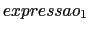
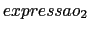
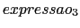
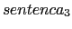
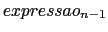
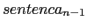
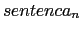

Embora ela não seja um tipo diferente de sentença, a seguinte construção é bastante comum para programar decisões entre diversas alternativas:
if ()

else if ()

else if ()


else if ( )

else

As expressões lógicas são avaliadas em ordem, começando com a . Se uma das expressões for verdadeira, a sentença associada será executada. Se nenhuma for verdadeira, então a sentença, , do último else será executada como opção default. Se a opção default não for necessária, então a parte
else
pode ser removida.
O seguinte exemplo mostra um else-if de três opções. O programa lê dois números e diz se eles são iguais ou se o primeiro número é menor ou maior que o segundo.
#include <stdio.h> main(void) { int num1, num2; /* obtem 2 numeros do usuario */ printf("Entre um numero: "); scanf("%d", &num1); printf("Entre com um outro numero: "); scanf("%d", &num2); /* mostra a mensagem de comparacao */ if (num1 == num2) printf("Os numeros sao iguais\n"); else if (num1 < num2) printf("O primeiro numero e menor\n"); else printf("O primeiro numero e maior\n"); }
No programa acima, se (num1 == num2) for verdadeiro, então os números são iguais. Senão, é verificado se (num1 < num2). Se esta condição for verdadeira, então o primeiro número é menor. Se isso não for verdadeiro, então a única opção restante é que o primeiro número é maior.
Este programa lê um número, um operador e um segundo número e realiza a operação correspondente entre os operandos dados.
#include <stdio.h> main(void) { float num1, num2; char op; /* obtem uma expressao do usuario */ printf("Entre com numero operador numero\n"); scanf("%f %c %f", &num1, &op, &num2); /* mostra o resultado da operacao */ if (op == '+') printf(" = %.2f", num1 + num2); else if (op == '-') printf(" = %.2f", num1 - num2); else if (op == '/') printf(" = %.2f", num1 / num2); else if (op == '*') printf(" = %.2f", num1 * num2); else printf(" Operador invalido."); printf("\n"); }
Exemplos da execução deste programa:
Entre com numero operador numero:
5 * 3.5
= 17.50
Entre com numero operador numero:
10 + 0
= 10.00
Entre com numero operador numero:
10 x 5.0
Operador invalido.